2D Test problems¶
Broad crested weir¶
A broad-crested weir is a standard hydraulic structure used as discharge measuring device and flow control device in open channel. This type of weir can be described as a simple solid rectangular channel obstruction spanned over the whole width of the channel. Due to the sharp edge of the upper left side corner of the weir, flow separation occurs at this location.
As the flow propagates mainly in 2 directions, a 2D computational domain was used for the simulation. The height of the domain is equal to and the length might vary from case to case. The weir has a height of and a width of 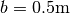. A uniform velocity distribution from bottom to free water level is imposed in the left wall boundary condition. The top of the domain is left open and the right wall of the domain allows the flow to leave the domain. In the following figure, a simple sketch of the structure is presented showing the main parameters.

where, is the approach velocity,  is the upstream
potential head, 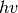 is the upstream velocity head, 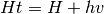 is the upstream total head,
is the upstream
potential head, 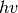 is the upstream velocity head, 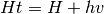 is the upstream total head,  is the flow depth over
the weir.
is the flow depth over
the weir.
This case tests the ability of PROTEUS to simulate the free-surface evolution and the flow separation. The results of the simulations can be compared with the data in the following references. For more details, see runfiles or references.
References¶
- Fritz HM and Hager WH (1998) Hydraulics of embankment weirs. Journal of Hydraulic Engineer 124(9), 963–971.
- Hager WH and Schwalt M (1994). Broad-crested weir. Journal of Irrigation and Drainage 120(1), 13–26.
Dambreak Collagrosi¶
The problem consists of a 0.60m x 1.20m (height x width) column of water, initially at rest, that collapses under the action of gravity and impacts to a wall. The computational domain is a rectangular box with a heigth of 1.80m and a width of 3.22m. The top of the domain is left open, when the rest of the boundary patches act as no slip walls. In the following figure, a sketch of the dambreak initial conditions is shown.

This case tests the ability of PROTEUS to simulate the free-surface evolution and forces / pressures on structures, according to data that are available in the following references. For more details, see runfiles or references.
References¶
- Colagrossi A and Landrini M (2003) Numerical simulation of interfacial flows by smoothed particle hydrodynamics, Journal of Computational Physics,191,448-475.
- Martin, J. C. & Moyce, W. J., (1952) Part IV. An Experimental Study of the Collapse of Liquid Columns on a Rigid Horizontal Plane Phil. Trans. R. Soc. Lond. A 244 (882) 312-324.
- Zhou, Z. Q., De Kat, J. O. and Buchner, B. (1999) A nonlinear 3-D approach to simulate green water dynamics on deck in: J. Piquet (Ed.), Proc. 7th Int. Conf. Num. Ship Hydrod., Nantes, 5.11, 15.
Submerged breakwater on slope¶
This benchmark simulates Wave propagation near a submerged breakwater on a slope and the comparisons of the results with experimental data in the in the nearshore zone are`` revealed and discussed. For the vertical breakwater, the published data by Jie et al. (2010) are used. The experiment was conducted in 60 m long, 0.5 m wide and 0.8 m deep wave flume. A 1/20 slope is placed at one side of the flume. The size of submerged breakwater is 10 cm crest wide, 1:2 gradient of front slope, 1:1 gradient of back slope, and 8 cm depth of submergence. For more details, see runfiles or references.
References¶
- J. Chen, C. Jiang, S. Hu, and W. Huang (2010) “Numerical study on the characteristics of flow field and wave propagation near submerged breakwater on slope”, Acta Oceanologica Sinica, 29(1), pp88-99
Sine wave sloshing¶
Proteus is initialised with a free-surface profile that will excite the first asymmetric sloshing mode. The free-surface slope is small, therefore, we can consider that the flow evolution will obey to the linear sloshing theory. The output of Proteus can be compared with the analytical solution found in Ibrahim (2005) including only a symmetric mode. The computational domain is a 2D rectangular box with dimensions 3.14m x 3.14m and the mean level of the water is in the middle of the box. The initail conditions of the simulation are shown in the following figure,

where, a is the amplitude of the sloshing wave.
This case tests the ability of PROTEUS to simulate the free-surface evolution. For more details, see runfiles or references.
References¶
- Ibrahim RA (2005). Liquid Sloshing Dynamics – Theory and Applications, Cambridge University Press, New York, NY.
Crump weir¶
A crump weir is a typical hydraulic structure mainly used as a measurement device in open-channels as well as for flow control. It is a triangular channel obstruction consisting of a 1:2 upstream and a 1:5 downstream slope.The slope upstream is designed to avoid material sedimentation while the downstream side is designed to stabilize the flow. The weir spans the width of the channel and obstructs the natural flow of the water.The following two flow conditions are tested:
- Modular flow conditions, where the flow regime is not affected by the downstream conditions. In this condition there is a direct relation between the flow rate and the upstream head. The modular flow condition is verified when the ratio between the downstream and the upstream total head is less or equal to 0.75.
- Non-modular flow conditions, where the flow regime is affected by the downstream conditions. This happens when the weir operates in submerged conditions. The flow rate in this case is related to the total head upstream and downstream of the weir and therefore both head measurements are required.
The computational domain is a 2D rectangular box with height equal to 2.1m the length might vary from case to case.The weir has a height of 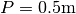 and a width of 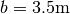. A uniform velocity distribution from bottom to free water level is imposed in the left wall boundary condition. The top of the domain is left open. The right wall of the domain allows the flow to leave the domain for the case of the modular flow, when for the case of the non-modular flow an outflow velocity and downstream water level are imposed on the right boundary.
In the following figure a simple sketch of the structure is presented.
{kind=link}
This case tests the ability of PROTEUS to simulate the free-surface evolution and the results of the simulations can be compared with the data in the following references. For more details, see runfiles or references.
References¶
- British Standards Institution (2008) BS ISO 4360:2008: “Hydrometry - Open channel flow measurement using triangular profile weirs”. London, BSI. (Withdrawn (ISO 4360:1984 is a current alternative).
Dambreak Ubbink¶
The problem consists of a 0.292m x 1.146m (height x width) column of water, initially at rest. A small obstacle (0.024m x 0.048m) is placed in the middle of the tank base. Under the action of gravity the water column interacts with the obstacle and collapses to a wall. The computational domain is a 2D rectangular box with dimensions 0.584m x 0.584m. The top of the domain is left open, when the rest of the boundary patches act as no slip walls. In the following figure, a sketch of the dambreak initial conditions is shown.
{kind=link}
This case tests the ability of PROTEUS to simulate the free-surface evolution and during the interaction of the dambreak front with the obstacle. The results of the simulations can be visually compared with the data in the following references. For more details, see runfiles or references.
References¶
- Ubbink, O. (1997), Numerical prediction of two fluid systems with sharp interfaces, PhD thesis, Department of Mechanical Engineering, Imperial College of Science, Technology & Medicine
Sharp crested weir¶
A rectangular sharp-crested weir is a hydraulic structure mainly used as a flow control and measurement device in open-channels. It is a channel obstruction made from a thin plate with a sharp edge at the top (crest), spanned across the width of the channel. This artificial barrier obstructs the natural flow of the water, leading to an increase in the water level upstream, before spilling over the structure. The computational domain is a 2D rectangular box with height equal to 1.8m and the length might vary from case to case. The weir has a height of P=1.0m and a small width of 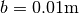. A uniform velocity distribution from bottom to the free water level is imposed in the left wall boundary condition. The top of the domain is left open and the right wall allows the flow to leave the domain. In the following figure, a simple sketch of the structure is presented showing the main parameters.

where,  is the approach velocity, is the upstream
potential head, is the upstream velocity head, is the upstream total head,
is the approach velocity, is the upstream
potential head, is the upstream velocity head, is the upstream total head,  is the thickness of the
nappe, 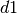 is the backwater depth beneath the nappe, 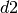
is the backwater depth downstream of the nappe.
is the thickness of the
nappe, 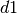 is the backwater depth beneath the nappe, 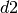
is the backwater depth downstream of the nappe.
This case tests the ability of PROTEUS to simulate the free-surface evolution and the flow separation. The results of the simulations can be compared with the data in the following references. For more details, see runfiles or references.
References¶
- Montes, J.S. (1992). “Curvature Analysis of Spillway Profiles.” Proc. 11th Australasian Fluid Mechanics Conference AFMC, Hobart, Australia, Paper 7E-7,2, 941-944.
- U. S. Army Engineer Waterways Experiment Station (WES, 1977) - HYDRAULIC DESIGN CRITERIA - SHEETS 111-11 to 111-14/1 - Overflow Spillway Crest – Upper Nappe Profile.
Vertical breakwater¶
Numerical simulation (hybrid LS-VOF model) of hydrodynamic process during the interactions between incident waves and vertical breakwaters and the comparisons of the results with experimental data in the in the nearshore zone are revealed and discussed. For the vertical breakwater, the published data by Xie (1981) are used. The experiment was conducted in a 38 m long, 0.8mwide and 0.6 m deep wave flume. The water depth was equal to 0.45 m at the beginning of the flume and reduced to 0.3 m at the flat bed near the breakwater with a 1:30 slope. For more details, see runfiles or references.
References¶
- Xie SL. Scouring pattern in front of vertical breakwaters and their influence on the stability of the foundation of the breakwaters. Report. Delft (Netherlands): Department of Civil Engineering, Delft University of Technology; September, 1981. 61 p.
Dambreak¶
The problem consists of a 0.146m x 0.146m x 0.292m column of water, initially at rest, that collapses under the action of gravity and impacts a stationary object. The computational domain is a rectangular box with dimensions 0.584m x 0.146m x 0.350m. The top of the domain is left open. For more details, see runfiles or references.
Preprocessing¶
No postprocessing is necessary for running this case. The first lines of dambreak.py the discretion and formulation can be chosen by modifying the following lines.
| Parameter | Description |
|---|---|
| Refinement = 2 | Controls the global level or refinement e.g. 5 ==> 32x16x16 |
| spaceOrder = 1 / 2 | Choose linear or quadratic elements |
| useHex = True / False | Choose hexahedral or tetrahedral elements |
| useRBLES = 0.0 / 1.0 | Choose SUPG (0.0) or RBLES/VMS (1.0) for stabilizing the Navier-Stokes equations |
| useMetrics = 0.0 / 1.0 | Choose h-based (0.0) or metric based (1.0) numerical parameters |
Running¶
The benchmark can be run using the following command:
mpirun -n #NP parun dambreak_so.py -l 3 -v -O petsc.options -D lin_tet_3
where #NP stand for the number of processors. The final argument, which specifies the output directory, is optional. Or use one of the run.#HOST.pbs run files.
Postprocessing¶
For extracting column heights and width a separate pvpython scripts are supplied in $PROTEUS_MPRANS/scripts. To be able to run the scripts pvpython needs to be installed. This is a special python shipped with paraview. Furthermore, the scripts assumed there is one master xmf file. This master xmf file can be generated by running the following command in the directory containing the xmf/h5 solution files.
$PROTEUS/proteusModule/scripts/gatherArchives.py -s #NP -f dambreak_p
This will generate a file dambreak_p_all#NP.xmf which can be used for extracting column heights and width by running the following commands in the directory containing the xmf/h5 solution files.
$PROTEUS_MPRANS/scripts/dambreakExtractHeightAndWidth.py -f dambreak_p_all#NP.xmf
This will produce the file height.txt that contain the height and width time series. The experimental data is provided by the file sakamoto_exp.dat
For visualizing purposes it might be beneficial to repackage the xmf/h5 solution files. There are three distinct reasons/benefits to do this:
- The script allows skipping time steps and only extracts variable deemed important, thereby greatly reducing the file size and hence the time to copy data form remote location.
- In the resulting solution files every time step has a distinct solution file, which allows visualization of results while the simulation is still running.
- The scripts also outputs VTK files which allows visualization with VisIt (and others).
Repackaging of the solution can be done by running the following commands in the directory containing the xmf/h5 solution files.
$PROTEUS_MPRANS/scripts/extractSolution.py -f ../dambreak_p -s #start -e #end -i #incr -n #NP
where #start end #end are the begin and end timestep number and #incr is a increment time step (aka stride) and #NP is again the number of processors.
For convenience all the postprocesing mentioned above are lumped in a simple script. This script can be run using following commands in the directory containing the xmf/h5 solution files.
postpro.sh
References¶
- S.Koshizuka, H. Tamako, Y. Oka (1995) A particle method for incompressible viscous flow with fluid fragmentation” Computational Fluid Mechanics Journal, 113, 134-147
- R.Elias, A. Coutinho (2007) Stabilized edge-based finite element simulation of free-surface flows” International Journal of Numerical Methods in Fluids 54, 965-993
- C.E. Kees, I. Akkerman, M. W. Farthing and Y. Bazilevs (2011) A Conservative Level Set Method for Variable-Order Approximations and Unstructured Meshes” Journal of Computational Physics, 230-12, 3402-3414, doi:10.1016/j.jcp.2011.02.030
Sluice gate¶
An under-shot sluice gate is a hydraulic structure mainly used as a flow control device in open-channels, where the discharge downstream can be related to the upstream head and therefore controlled. It is basically a vertical obstruction spanning the whole width of the channel with an opening across the bottom. The computational domain is a 2D rectangular box with height equal to 3.75m and the length equal to 4.5m The sluice gate has an opening of 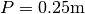 and a small width of . A uniform velocity distribution from bottom to free water level is imposed in the left wall boundary condition. The top of the domain is left open and the right wall of the domain allows the flow to leave the domain. In the following figure a simple sketch of the structure is presented showing the main parameters.

where, is the approach velocity,  is the
velocity downstream of the gate, d1 is the upstream water level, P is
the opening of the gate, d1 is the water depth downstream of the gate.
is the
velocity downstream of the gate, d1 is the upstream water level, P is
the opening of the gate, d1 is the water depth downstream of the gate.
This case tests the ability of PROTEUS to simulate the free-surface evolution. For more details, see runfiles or references.
References¶
- White F.M. 1999. “Fluid Mechanics”. Fourth Edition, McGraw-Hill series in mechanical engineering.
Steady state current propagation over a flat bottom¶
The simulation aims to generate a uniform velocity profile in the inlet boundary of the flume and to investigate the development of a fully developed turbulent velocity profile within the length of the flume. Uniform velocity profiles simulate deep water currents and are the simplest velocity profiles to investigate wave-current interaction. Generating turbulent velocity profiles gives confidence in the turbulent models within PROTEUS, important for current interaction with hydraulic structures and floating bodies.
The present problem consists of 2D rectangular numerical flume with
height, H, of 1.5 m and a length, L, of 10.0 m, where the mean water
depth, h, is equal to 1.0 m. At the left boundary, a uniform
horizontal velocity profile is generated with a velocity
. At the top boundary atmospheric conditions have been
assigned and the bottom boundary acts as a no-slip wall. The right
boundary has free outflow conditions. The water phase is initiated
with a velocity in order to obtain in a short simulation
time steady state conditions. A sketch of the domain is given in the
following figure.

This test case demonstrates the ability of PROTEUS to simulate the creation of steady state log-profile current within the flume as well as its absorption.
References¶
- von Kármán, T. (1930), “Mechanische Ähnlichkeit und Turbulenz”, Nachrichten von der Gesellschaft der Wissenschaften zu Göttingen, Fachgruppe 1 (Mathematik) 5: 58–76 (also as: “Mechanical Similitude and Turbulence”, Tech. Mem. NACA, no. 611, 1931).
Solitary wave propagation over a flat bottom¶
A solitary wave is a theoretical wave shape (Boussinesq, 1872) that is often used in numerical wave simulations, partly because they have the unique property of being ‘stand-alone’ waves that maintain their shape and kinematics when propagated over a flat smooth surface. By measuring the properties of the wave as it propagates, the absence of numerical dissipation during wave propagation can be confirmed.
The present problem consists of 2D rectangular numerical flume with height, H, of 2.0 m and a length, L, of 60.0 m, where the mean water depth, h, is equal to 1.0 m. At the left boundary, a solitary wave is generated with a height of 0.05 m. Atmospheric conditions have been assigned to the top boundary of the domain, the bottom boundary act as a free-slip wall and in the right boundary a free outflow has been assigned. A sketch of the domain is given in the following figure.

This test case demonstrates the ability of PROTEUS to simulate the generation and propagation of a solitary wave as well as its absorption.
References¶
- Boussinesq J. (1872). Theory of waves and eddies that propagate along a horizontal rectanguar flume, by transmitting to the fluid in the flume, a speed that is approximately the same from bottom to surface, Journal de Mathématique Pures et Appliquées, Deuxième Série Vol 15: 55–108.
Nonlinear waves propagation over a flat bottom¶
Plane regular nonlinear waves are mild and high steepness waves that propagate in a single direction, in uniform wave fronts. The wave profile deviates from the sinusoidal shape, and it typically exhibits high and sharp wave crests and low and flat wave troughs. We cannot always accurately calculate the wave celerity from the linear dispersion theory, especially for highly nonlinear waves. Fenton (1988) proposes a method for calculating the nonlinear wave properties and profile, which we have adopted for the generation of nonlinear waves within Proteus.
Given the wave period, the wavelength will be a function of the water depth. So it is the wave period, water depth and the wave height that contribute to the linearity or nonlinearity of the wave. Their interrelation is summarised in the following figure (Lé Méhauté 1976).

where, the vertical axis corresponds to the no dimensional wave height and the horizontal to the no dimensional water depth. The term gT2is proportional to the wavelength in deep water and the dot named A corresponds to the tested case which is described below. The present problem consists of 2D rectangular numerical flume with height of 1.5 m and a length of 40.6 m, where the mean water depth is equal to 0.873 m. At the left boundary, a regular non-linear wave is generated with a height of 0.109 m and a period of 2.95 s using Fenton’s method (Fenton, 1988). In the top boundary atmospheric conditions have been assigned and the bottom boundaty acts as a free-slip wall.
This case tests demonstrates the ability of PROTEUS to simulate the generation and propagation of non-linear waves as well as their absorption.
References¶
- Fenton JD (1988) The numerical solution of steady water wave problems, Comp and Geosc, 14(3), 357-368.
Linear wave shoaling¶
Sea waves transform when propagating from the offshore to the near shore environment and as they interact with coastal structures. In a 2D flume, the main factors contributing to wave transformation are shoaling, reflection, transmission and breaking. The present case consists of a numerical experiment aiming to reproduce regular linear wave shoaling over simple but realistic bathymetry of a constant-slope beach. The assessment of the numerical model performance is achieved through comparison with theoretical solutions.
The present problem consists of a 2D numerical flume with a sloping bottom with 1:m slope. Upstream the slope there is a flat bottom region with length, Lu, equal to 5.0 m, the domain height, H, is 1.5 m and the mean water depth, h, is equal to 1.0 m. Downstream of the slope the water depth,b , is 0.4 m. The total length of the domain, L, is 30m. Two cases with slopes 1:10 and 1:25 are tested, where the length of the slope, Ls, is 6.0 m and 15.0 m respectively. Case A corresponds to the slope 1:10 and case B corresponds to the slope 1:25. In both cases, at the left boundary regular linear waves are generated with height of 0.025 m and period of 1.94 s. The bottom boundaries act as a no-slip walls. A sketch of the domain is given in the following figure.

This test case demonstrates the ability of PROTEUS to simulate the shoaling process of regular linear waves over a constant slope bathymetries as well as their absorption.
References¶
- US Army Corps of Engineer (2002) Coastal Engineering Manual. Engineer Manual 1110-2-1100, US Army Corps of Engineers, Washington, DC (in 6 volumes)
Wave/current interaction¶
The presence of a current in the wave field causes the waves to transform. The primary effect of a current, with velocity u, to a wave is the change the wavelength due to a Doppler shift. If the wave and current travel in the same direction (following current), then the wavelength is increased over the one that waves would possess in still water. If waves and current travel in opposite direction (opposing current) then the wavelength is decreased. Wave current interaction with the waves also affects the wave height due to wave energy conservation and the wave height decreases for following currents and increases for opposing currents. Given the wave period, modified height, depth and current velocity, the Fenton Fourier Transform theory can be used to calculate wavelength, particle velocities and pressure and these variables can be imposed as a boundary conditions in a numerical wave flume.
A sketch of the interaction of waves with a current is given in the following figure.

where, lambda1, lambda2, lambda3 are the wave lengths in the case without a current, an opposing current and a following current, respectively and the H0, H1 ,H2 are the corresponding wave heights. Also, the relationship between the wave lengths and the wave heights is the following: lambda1 < lambda0 < lambda2 and H2 < H0 < H1.
The present benchmark case aims to simulate 2 different cases of wave/current interaction, where the modification of a linear regular wave by a uniform steady current is modelled. The first case consists of a regular wave with a following current of 1 m/s and the second case to an opposing current of 0.5 m/s to the same regular wave as in the first case. The numerical domain of both cases consists of a 2D rectangular numerical flume with height of 2.0 m and a length of 60.0 m. The mean water depth is equal to 1.0 m. The flux parameters of the modified waves due to a uniform current are imposed at the left boundary of the domain and the flux parameters are defined using Fenton’s method (Fenton, 1988). Atmospheric conditions have been assigned to the top boundary of the domain, the bottom boundary acts as a free-slip wall.
This test case demonstrates the ability of PROTEUS to simulate the wave/current interaction in a 2D configuration.
References¶
- Brevik I and Aas B (1980) Flume experiments on waves and currents II. smooth bed. Coastal Engineering,3, 149-177.
- Fenton JD (1988) The numerical solution of steady water wave problems, Comp and Geosc, 14(3), 357-368.
Wave breaking¶
Sea waves transform when propagating from the offshore to the near shore environment and as they interact with coastal structures. In a 2D flume, the main factors contributing to wave transformation are shoaling, reflection, transmission and breaking. The present case aims to reproduce numerically the laboratory experiments on wave breaking of Ting and Kirby (1994). Ting and Kirby (1994) conducted experiments on a 1 to 35 constant-slope bathymetry on 2 different types of breaking i.e. spilling and plunging breaking of cnoidal waves.
The present problem consists of a 2D numerical flume with a sloping bottom of 1:35 slope. Upstream the slope the domain has a height, H, of 1.0 m, where the mean water depth, h, is equal to 0.4 m. The total length of the domain, L, is 40m. Two cases are simulated with regard to the type of breaking i.e. (a) spilling and (b) plunging breaking. In both cases, at the left boundary cnoidal waves are generated. The wave heights are 0.125 m and 0.128 m, for cases (a) and (b) respectively, when the wave period in the case (a) is 2.0s and in case (b) is 5.0s. For the generation of the waves the Fenton’s method (Fenton, 1988) have been used for identifying the input flux parameters within the left boundary. The bottom and right boundaries act as a free-slip walls, when in the top boundary have been assigned atmospheric conditions. A sketch of the domain is given in the following figure.

where L1=15.0m and ht=0.38m
This test case demonstrates the ability of PROTEUS to simulate the shoaling process of two different types of wave breaking over a constant slope bathymetry.
References¶
- Ting FCK and Kirby JT (1994) Observation of Undertow and Turbulence in a Laboratory Surf Zone. Coastal Engineering, 24, 177-204.
- Fenton JD (1988) The numerical solution of steady water wave problems. Computer and Geosciences, 14(3), 357-368.
Dingemans wave shoaling¶
Sea waves transform when propagating from the offshore to the near shore environment as they interact with coastal structures. In a 2D flume, the main factors contributing to wave transformation are shoaling, reflection, transmission and breaking. The present case is the numerical reproduction of the Dingemans’ experiment (Dingemans, 1994), which is a classic benchmark test for numerical models and refers to non linear shoaling over a submerged shoal. The experimental setup is shown the figure below. The geometry represents a submerged bar with seaward and shoreward slopes of 1/20 and 1/10, respectively.
The numerical domain of the simulation has a length, L, of 58.0 m. Upstream and downstream the shoal the domain has a height, H, of 1.26 m, where the mean water depth, h, is equal to 0.86 m. Over the shoal’s crest the water depth, b, is equal to 0.2 m. At the left boundary regular non linear waves are generated with height of 0.082 m and period of 1.43 s using Fenton’s method (Fenton, 1988). The bottom boundaries act as a no-slip walls.

where, L1=9.22 m, L2=5.79 m, L3=12.03, L4=4.0 m, L5=6.03 m, L6=8.74 and L7=12.19 m.
This test case demonstrates the ability of PROTEUS to simulate the shoaling process of regular non linear waves over a submerged shoal as well as their absorption.
References¶
- Dingemans M.W. (1994). Comparison of computations with Boussinesq-like models and laboratory measurements, Report H-1684.12, Delft Hydraulics, 32
- Fenton J.D. (1988). ‘The numerical solution of steady water wave problems’, Comp and Geosc, 14(3), 357-368.